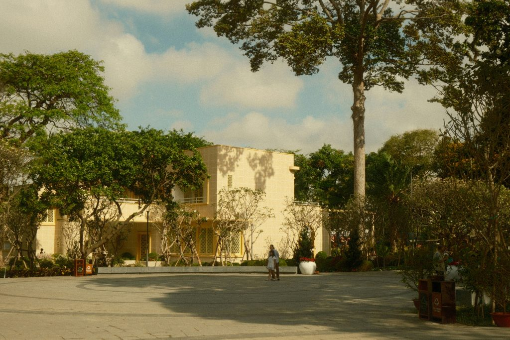

Nobody planted it. Nobody watered it. Nobody ever said thank you. And yet, somehow, it held everything together.

Every Nigerian family had one. The big tree in the compound, or just outside the gate, or at the corner of the fence where the children were not supposed to climb but absolutely did. Nobody remembers who planted it. It was simply always there, which is perhaps why nobody ever thought too hard about what it was actually doing.
It provided shade for every naming ceremony, every Sunday afternoon, every argument that needed to be had somewhere cooler than inside. Its roots tripped up every visitor at least once. Its branches held the rope, the drying ankara, and at least one child who had been told repeatedly to come down.
And then one day, someone, usually an uncle with a plan, suggested cutting it down. To build something. To pave something. And suddenly the entire family had a very loud opinion about a tree they had never once discussed before.
You did not know you loved that tree until someone threatened it. Which, if you think about it, sounds like someone else we know.
What the Tree Was Actually Doing
While the family was living under it and occasionally arguing about it, that tree was quietly running an entire environmental service operation on your behalf. Free. Without acknowledgement. Without complaint.
On every hot afternoon, its canopy blocked solar radiation from hitting the ground and the roof. Simultaneously, it released water vapour through its leaves through a process called evapotranspiration, actively cooling the surrounding air the way an air conditioner cools a room. No generator. No diesel. No NEPA bill. A single mature tree can reduce ambient temperature in its immediate surroundings by 2 to 8 degrees Celsius. In a Nigerian compound in March, that is the difference between a conversation and a quarrel.
Reality Check
That tree was also holding the ground together. Its root system anchored the soil against erosion, drew rainwater deep into the earth rather than letting it flood the yard, and fed the surrounding soil with organic matter every time a leaf fell. The compound did not just look better with the tree in it. It functioned better.
The Networker Nobody Knew About
If the compound tree was connected to nearby trees, and in most Nigerian neighbourhoods it almost certainly was, something even more remarkable was happening underground. As we explored in a recent article on forest communication, trees exchange water, carbon, and chemical signals through mycorrhizal fungal networks threading through the soil between root systems. The compound tree was not just serving your family. It was participating in a neighbourhood-wide biological conversation nobody above ground could hear.
When it rained too hard, its roots slowed the water. When harmattan arrived, it kept releasing humidity into the air around it, softening the dryness in ways you probably felt without ever connecting it to the tree ten metres away. It was, in the most literal sense, looking after the place. Quietly, consistently, and without any interest in being noticed.
The Uncle Was Wrong
Not just sentimentally wrong. Economically wrong. A mature compound tree, whether a mango, an Iroko, an avocado, or a stubborn old Neem, is infrastructure that cannot be quickly replaced. You can pour concrete. You cannot pour three decades of root development, canopy coverage, and carbon storage in one weekend or one generation.
The cost of losing it is not felt immediately. It arrives in slightly hotter afternoons, slightly worse drainage, slightly more dust on the veranda. Slightly less of everything the tree was doing that nobody counted because nobody thought to count it.
Reality Check
At Exploreland Farms, we think about trees the way most families think about their compound tree after it is gone: with the clarity that comes slightly too late. The goal is to think about them that way while they are still standing. And to plant more before the next uncle arrives with a chainsaw and a construction plan.
Go and Stand Under It
If you still have one, go and stand under it today. Not to do anything in particular. Just to be reminded that some of the most valuable things have been standing quietly in the background, doing their work, asking for nothing, and making everything around them function a little better than it otherwise would.
The compound tree did not need a ceremony. It did not need a card. It just needed to be left standing.
Plant one if you do not have one. Protect one if you do. And the next time someone arrives with a plan to cut it down, let the whole family have their opinion. Loudly.